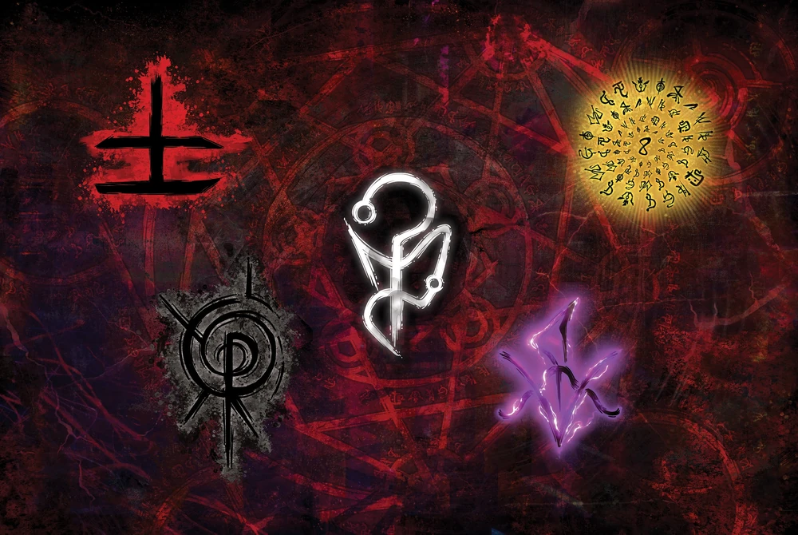
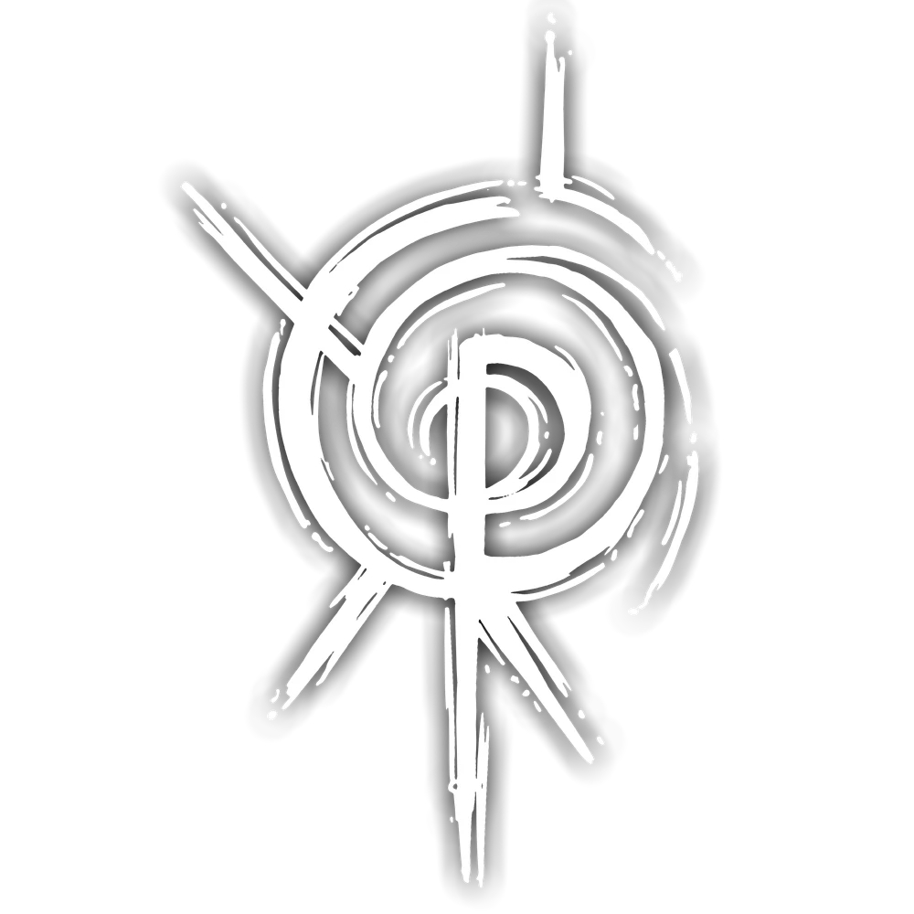
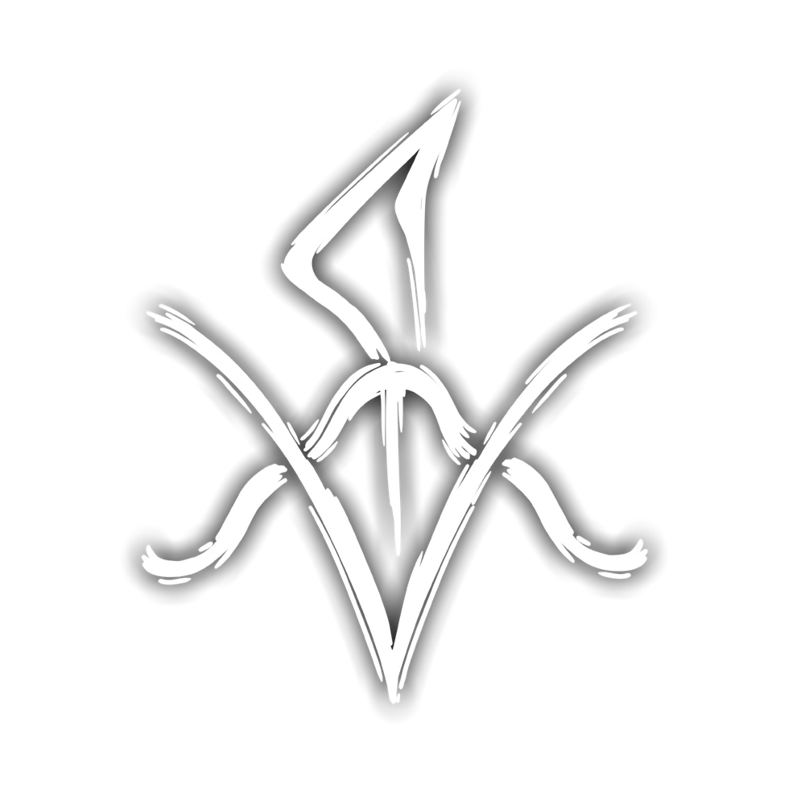

Elementos do Outro Lado

Os Elementos do Outro Lado são uma das principais fundações do Ocultismo. Esses que podem ser divididos em cinco principais:
Sangue, Morte, Conhecimento, Energia e Medo. Cada um desses elementos possuem propriedades únicas e são responsáveis por definir as características das materializações do Outro Lado na Realidade.
As Relíquias da Calamidade são a Ponte de cada Elemento do Outro Lado com a Realidade, sendo responsáveis por permitir que eles se manifestem nela.

O Sangue é a entidade do sentimento. Ele busca a intensidade: dor, obsessão, paixão, amor, fome, ódio - tudo que envolve sentir uma emoção extrema agrada a entidade de Sangue.
Os sentimentos extremos do Sangue superam a razão e a calmaria do Conhecimento.
- Diário de Deus

A Morte é a entidade do tempo. Ela busca os momentos vivenciados, distorcendo a percepção egóica da existência de cada indivíduo para seu próprio agrado.
A distorção temporal da Morte arruína a percepção carnal do Sangue.
- Diário de Deus

O Conhecimento é a entidade da consciência. Descobrir, aprender, conhecer, decifrar. Ter a própria percepção do Outro Lado e suas entidades agrada o elemento de Conhecimento.
A razão e lógica do Conhecimento reintegram e suprimem o caos da Energia.

A Energia é a entidade do caos. Tudo que não pode ser explicado, o intangível, a anarquia. A constante mudança, o calor e o frio, a luz e as trevas. Tudo que envolve a imprevisibilidade e a transformação agrada a entidade de Energia.
A transformação da Energia sobrecarrega os efeitos da Morte.
- Diário de Deus
O Medo é a entidade do desconhecido e do infinito. Presente desde os primórdios da humanidade, modifica a natureza do universo. A sua existência diferenciada é um mistério.
- Descrição Oficial